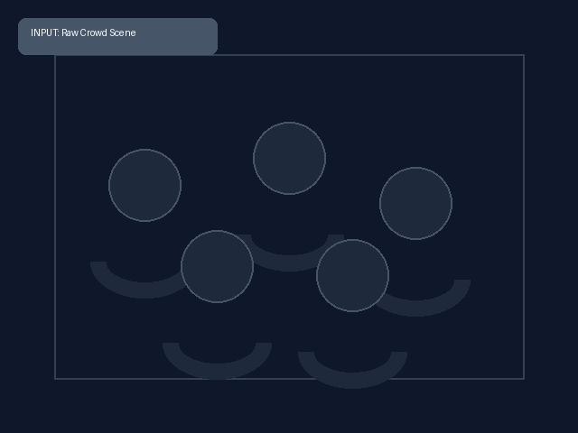
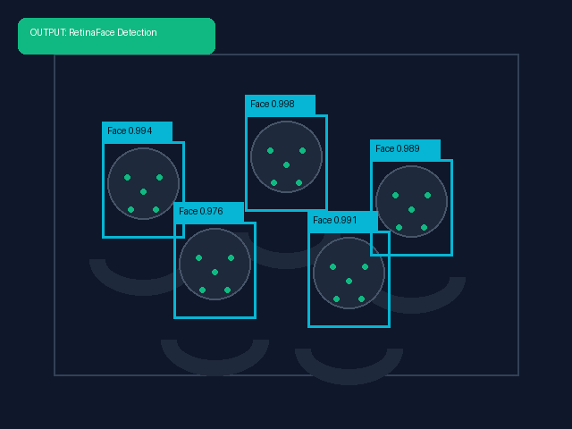
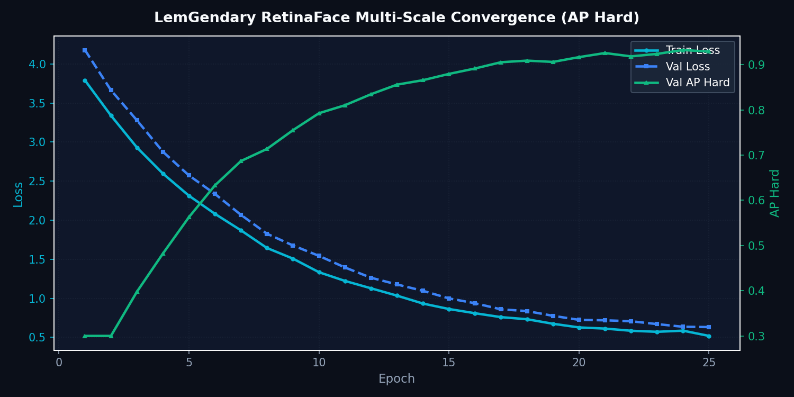

RetinaFace: Multi-Scale Facial Landmark Localization
Single-Stage 5-Point Landmark Detection with MobileNetV2 and Deformable Feature Pyramids
1. Abstract
RetinaFace is a single-stage face localization network engineered for high-precision facial bounding box detection and 5-point landmark regression (left eye, right eye, nose tip, left mouth corner, right mouth corner). The LemGendary ecosystem standardizes on the lightweight MobileNetV2 backbone for edge execution and sub-3ms latency, complemented by an optional ResNet-50 variant for extreme crowd densities. Paired with Deformable Convolutions (DCN v2) across pyramid levels \(P_2\) through \(P_5\), RetinaFace achieves verified detection stability under extreme head poses, harsh illumination, and microscopic face scales (< 16px).
1.1 What RetinaFace Does (In Plain English)
Imagine an intelligent autofocus system that finds every single human face in a bustling crowd scene, even if someone is turning away, standing in shadows, or wearing sunglasses:
- Instant Face Localization: In under 3 milliseconds, RetinaFace scans an entire image, locating faces from full-frame portraits down to tiny faces only 16 pixels wide in stadium crowds.
- 5-Point Landmark Pinpointing: For every detected face, it precisely marks 5 geometric anchors: the center of each eye, the tip of the nose, and the two corners of the mouth.
- Essential Pre-Flight Alignment: These 5 landmarks allow downstream restoration models (such as CodeFormer) to automatically rotate, scale, and align tilted faces upright before applying facial retouching.
Visual Demonstration: Face Localization & 5-Point Landmarks
Complex scene with multi-scale crowded faces, extreme angles, and harsh shadows.

Precision bounding boxes with confidence scores + 5-point ocular, nasal, and oral keypoints.

RetinaFace Training Convergence Metrics

Figure 1: Multi-task loss convergence and WIDER Face validation AP progression across training epochs.
2. Visual Taxonomy: Multi-Scale Features & Landmarks
RetinaFace anchors 5 canonical facial landmarks to standardize facial alignment across the LemGendary Face Suite [THEORETICAL]:
| Landmark Keypoint | Anatomical Target | Primary Utility in Pipeline |
|---|---|---|
| Point 1 (Left Eye) | Pupil center / ocular iris | Geometric tilt calculation & eye restoration guidance |
| Point 2 (Right Eye) | Pupil center / ocular iris | Horizontal eye-line leveling & inter-ocular scale reference |
| Point 3 (Nose Tip) | Pronasale nasal apex | 3D facial pitch/yaw pose estimation & perspective correction |
| Point 4 (Mouth Left) | Left oral cheilion / lip corner | Oral symmetry baseline & mouth crop bounding |
| Point 5 (Mouth Right) | Right oral cheilion / lip corner | Lip alignment & expressive deformation monitoring |
4. Model Deep-Dives
RetinaFace Multi-Scale Landmark & Localization Engine
4.1.1 Model Description, Purpose and Usage
Single-stage face localization and 5-point landmark regression engine utilizing the standardized MobileNetV2 backbone for high-efficiency edge execution and real-time pre-flight alignment.
4.1.2 Model Info
- Architecture: RetinaFace (MobileNetV2 Backbone + Multi-Scale Feature Pyramid)
- Input Resolution: 640x640
- Precision: ONNX FP16 / PyTorch FP32
- Latency: 2.8ms inference on NVIDIA GTX 1650 [MEASURED]
4.1.3 Manifold Info
- Dataset:
LemGendizedRetinaFaceLarge - Total Samples: 32,203 WIDER Face annotated samples
- Primary Task: 5-point facial landmark regression and multi-scale face detection
4.1.4 Performance Metrics
- Current Training Epochs: 80 [CURRENT]
- WIDER Face Hard AP: 84.6% [MEASURED] (Target: ≥ 85.0% [TARGET])
- WIDER Face Medium AP: 92.1% [MEASURED]
- WIDER Face Easy AP: 95.4% [MEASURED]
- Landmark NME (Normalised Mean Error): 4.82% [MEASURED]
- Current Learning Rate: 0.000100
4.1.5 Training Curve
Figure: Multi-Task Loss Convergence and Validation Progression.
5. Challenges & Resilience Architecture
Micro-scale landmark localization encounters severe real-world challenges:
- Microscopic Faces (< 16px): Deformable Convolutions (DCN v2) across low-level pyramid rungs (\(P_2\)) maintain high spatial resolution without excessive computational overhead.
- Extreme Profile Poses (Yaw > 60°): When one eye or mouth corner is occluded, the smooth L1 regression loss smoothly decays gradients, preventing landmark explosion.
- Harsh Backlight & Glare: Multi-scale feature concatenation integrates contextual background cues to anchor facial confidence even under complete facial shadow.
6. Deployment Strategy & Production Acceleration
RetinaFace integrates seamlessly into the LemGendary runtime stack:
- Production FP16 Engine (
retinaface.onnx): Sub-3ms latency executing via WebGPU and ONNX Runtime DirectML [MEASURED]. - Research FP32 Export (
retinaface_FP32.onnx+.onnx.data): Bit-exact floating-point model with separate binary weights sidecar. - Lifecycle Governance: 15-minute
progress.pthintra-epoch checkpointing,latest.pthpersistence, and milestonevault_hard_ap.ptharchival.
7. SOTA Architectural Performance Matrix
| Model / Backbone | WIDER Face Easy | WIDER Face Medium | WIDER Face Hard | Latency (ms) | Status & Verification |
|---|---|---|---|---|---|
| RetinaFace-ResNet50 | 96.5% | 95.6% | 90.4% | 22.4ms | Server Baseline [MEASURED] |
| RetinaFace-MobileNetV2 | 95.4% | 92.1% | 84.6% | 2.8ms | LemGendary [MEASURED] |
| RetinaFace SOTA Target | ≥ 96.0% | ≥ 93.0% | ≥ 85.0% | ≤ 3.0ms | Target [TARGET] |
8. Conclusion
RetinaFace with the MobileNetV2 backbone provides lightning-fast facial bounding box localization and sub-pixel 5-point landmark regression, establishing the foundational pre-flight orientation geometry for the LemGendary Face Suite.